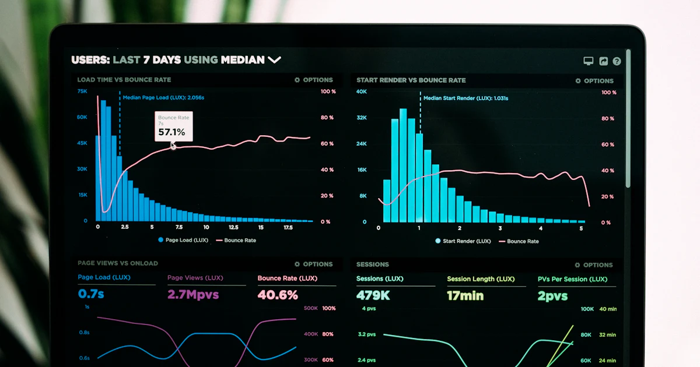

Cloud Technology
Cloud Migration Strategies for 2024
Compare migration patterns, timelines, cost considerations, and the operating model changes that make cloud adoption stick.
Read MoreBlog
Read field-tested guidance on cloud, security, DevOps, cost optimization, AI, and continuity planning.
Compare migration patterns, timelines, cost considerations, and the operating model changes that make cloud adoption stick.
Read MoreBuild a defense program around identity, data protection, monitoring, compliance evidence, and continuous security operations.
 Maya Shah12 min read
Maya Shah12 min readUse CI/CD, infrastructure as code, release safety, and collaboration rituals to move faster without creating operational risk.
 Daniel Brooks10 min read
Daniel Brooks10 min read
Find the practical savings hidden in compute plans, unused resources, database choices, autoscaling, and cost observability.
Read MoreTurn AI ideas into governed workflows by focusing on data readiness, model validation, ethical use, and measurable business value.
Read MoreDesign recovery goals, backup strategies, testing routines, and continuity procedures that keep critical services available.
Read MoreArticle Library
Cloud migration is not simply a hosting decision. Done well, it improves release speed, resilience, observability, and financial transparency. Organizations gain elastic capacity, managed services, stronger automation options, and faster experimentation. The strongest business cases link migration to a measurable outcome such as shorter deployment cycles, lower recovery risk, improved geographic reach, or retiring expensive legacy infrastructure.
Lift-shift works when speed matters and workloads are stable. Refactoring is useful when teams can modernize selected services without rewriting the entire application. Rebuild should be reserved for systems where legacy constraints prevent the business model from evolving. Most mature migration programs blend these approaches by workload instead of forcing one pattern across every system.
Cloud cost control starts before migration. Tagging, budget alerts, instance right-sizing, storage lifecycle policies, and reserved capacity planning should be part of the landing zone. After migration, teams should review utilization weekly until the new operating model stabilizes. The biggest savings usually come from eliminating idle resources, choosing managed services wisely, and scaling down non-production environments.
A practical migration timeline starts with discovery, dependency mapping, landing zone design, pilot migration, workload waves, and optimization. Smaller estates can move in weeks. Regulated or highly integrated environments often need several months. The most reliable plans include rollback criteria, business validation steps, and post-migration hardening.
Enterprise security teams face credential theft, ransomware, supply chain compromise, cloud misconfiguration, and insider risk. The pattern is clear: attackers exploit weak identity, poor monitoring, unpatched assets, and unclear incident ownership. A modern program must reduce attack surface while improving detection and response speed.
ISO 27001, SOC 2, NIST CSF, HIPAA, and GDPR all emphasize governance, access control, data protection, incident response, and continuous improvement. The right framework depends on industry, geography, and customer expectations. Frameworks should create clarity, not paperwork that nobody uses.
Start with identity and inventory. Enforce MFA, least privilege, privileged access review, endpoint protection, logging, and patch cadence. Harden cloud accounts with guardrails, network segmentation, encryption, and automated configuration checks. Build runbooks for likely incidents and rehearse them before pressure arrives.
Security controls degrade when ownership is unclear. Monthly reviews should check open risks, stale access, patch exceptions, alert quality, backup evidence, and incident lessons. Quarterly executive reporting should translate technical posture into business risk.
Effective DevOps is not a tooling project. It is a delivery model that connects engineering, operations, security, and business stakeholders around repeatable release practices. The goal is to reduce handoffs, shrink feedback loops, and make production changes observable and reversible.
Strong pipelines include source control policy, automated tests, artifact creation, environment promotion, security scanning, approval gates, deployment automation, and rollback steps. A pipeline should make the safe path the easiest path.
pipeline:
test -> build -> scan -> deploy-staging -> approve -> deploy-prod -> verifyInfrastructure as code makes environments reproducible, reviewable, and easier to recover. Versioned templates also reduce configuration drift and allow teams to test infrastructure changes before production rollout.
Use shared dashboards, incident channels, release notes, and runbooks. Automation works best when communication is equally structured. Every release should answer what changed, how it was tested, how it is monitored, and how it can be rolled back.
Stable workloads should be evaluated for savings plans or reserved instances. On-demand capacity still matters for variable workloads and experimentation, but mature environments should not leave predictable usage entirely on premium pricing.
Idle volumes, old snapshots, oversized instances, unattached IPs, and abandoned development environments can quietly inflate cloud spend. Tagging and automated cleanup policies help teams find ownership and remove waste without creating risk.
Database cost often grows faster than compute cost. Review storage classes, index health, read replicas, backup retention, and managed service sizing. Small query and schema improvements can delay expensive scaling moves.
Use budget alerts, anomaly detection, and unit economics dashboards. Cost reports should connect spend to business context: transactions, users, revenue, environments, and service owners.
Useful AI projects usually start with a repetitive decision, a messy information workflow, or a forecasting problem. Common examples include demand prediction, document classification, customer support assistance, anomaly detection, and personalized recommendations.
Data readiness determines whether a model can be trusted. Teams need ownership, lineage, privacy rules, labeling standards, and validation checks before training. Without this foundation, AI pilots often look impressive in demos and fail in production.
Validation should include accuracy, bias checks, performance under edge cases, drift monitoring, and human review. A business workflow should define when to trust the model, when to escalate, and when to retrain.
Responsible AI means transparency, consent, auditability, and clear limits. ROI should be measured in cycle time, revenue lift, cost reduction, error reduction, or improved customer experience, not only model metrics.
Recovery Time Objective defines how quickly a service must return. Recovery Point Objective defines how much data loss is acceptable. These targets should be set by business impact, not by technical habit.
Backup design should consider frequency, retention, encryption, immutability, geographic separation, restore priority, and ownership. A backup that has never been restored is only a hope, not a control.
Regular recovery tests reveal gaps in documentation, credentials, dependencies, and communication. Start with tabletop exercises, then perform technical restores, then graduate to failover simulations for critical systems.
Runbooks should explain who declares an incident, who communicates, who restores systems, how decisions are logged, and how business stakeholders validate recovery. After every test or incident, update the runbook with lessons learned.